DEGREE: BS/MS Manufacturing Engineering and Management, De La Salle University (Expected 2027)
OFFLINE MODE: Football, travel, photography
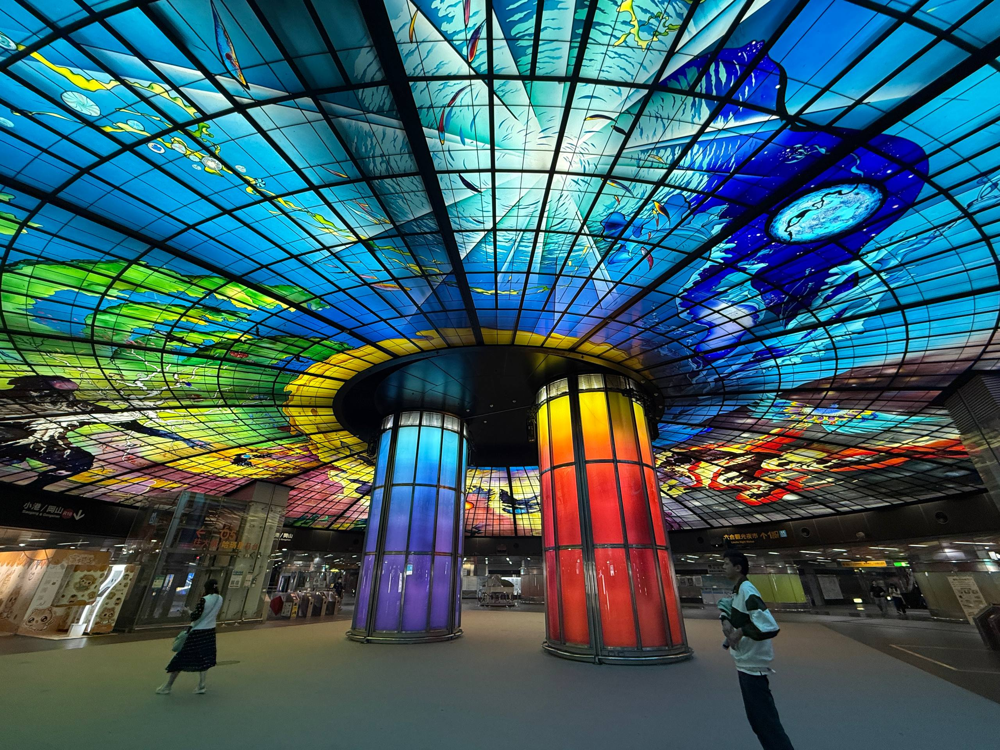
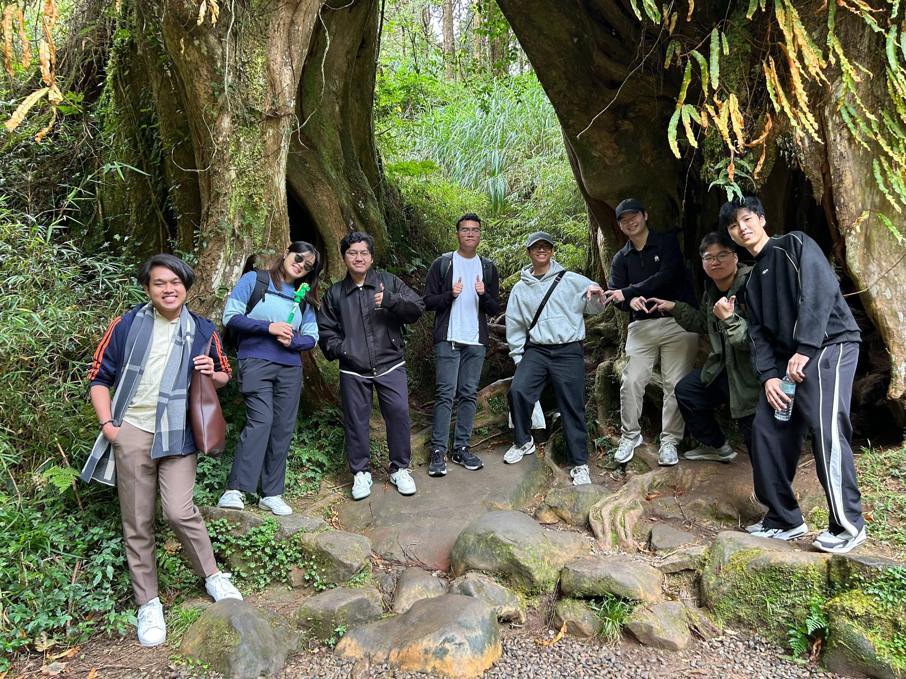
Graduate Research Assistant
National Chin-Yi University of Technology, Taichung, Taiwan
Aug – Dec 2025 · May – Jul 2026
Built a Python pipeline that turns video trials into light-intensity features for a mechanoluminescent elastomer grid prototype.
Co-authored a paper in VTCA 2026 and IEEE ICCT-Pacific 2026.
Designed a wrist-conforming sensor housing and built a low-cost automated 3-axis testing rig with marker tracking.
Senior Officer
Society of Manufacturing Engineers, DLSU Chapter
2024 – 2025
Helped organize events for the DLSU Department of Biomedical, Mechatronics, and Robotics Engineering. Documented plant visits in Osaka, Japan for 40+ students and curated 300+ photos into promotional material.
Taiwan Experience Education Program
Stint 1, Aug – Dec 2025: Built a mechanoluminescent elastomer grid prototype and a Python feature-extraction pipeline. Co-authored a paper in IEEE ICCT-Pacific 2026.
Stint 2, May – Jul 2026: Designed a wrist-conforming sensor housing and built a low-cost 3-axis testing rig with marker tracking to screen 4 silicone elastomer blends.
Master's thesis, May 2026 – present. Under review at IEEE Sensors Journal.
A wearable, camera-based sensor that estimates hand grip force from how a silicone skin deforms on the forearm.
The GripVT sensor
Problem
Grip strength is a standard clinical measure, but no non-invasive method captures the forearm deformation that produces it. Dynamometers give one force number, EMG needs careful setup and drifts with fatigue, and pressure gloves restrict motion. Visuotactile sensing works for object contact, but had not been tested on human skin driven by muscle.
Method
Mold a soft silicone skin with a 99-marker grid and wear it over the forearm.
Track marker displacement with a camera as the wearer grips (Kalman filter and Hungarian assignment).
Predict grip force with Ridge, XGBoost, and MLP models, compared with leakage-safe nested cross-validation (Optuna, MLflow).
Built the data-collection app in Python (CustomTkinter): calibration, live camera feed, and de-identified, crash-safe session storage. 379 tests across 21 files (pytest).
Graphical abstract: hardware, marker tracking, and the model pipelineExploded viewData collection softwareWorn on the forearmMarker detection: raw grid and tracked markers
Result
Grip force predicted to within ~6% of a wearer's maximum strength for returning wearers and ~9% for new wearers, on 98 sessions from 10 participants.
A low-cost automated test bench for characterizing soft sensor materials.
The full rig, labeled
Problem
Published protocols for visuotactile sensors use industrial robotic arms that cost $10,000 – $14,000 per rig. The manual fallback, a force gauge, takes an estimated 25 hours per specimen because there is no automated depth control or synchronized force and position logging.
Method
Retrofit an Ender 3 3D printer with a load cell and a camera (about $250 total).
Track 150+ markers per frame at ~30 FPS with OpenCV, Kalman filtering, and Hungarian assignment.
Run calibration, testing, and logging unattended: self-calibrating depth search, safety interlocks, and crash-safe resumable sessions.
Compare 4 silicone elastomer blends with one-way ANOVA and Tukey HSD.
Predict PM2.5 and PM10 air-pollution levels in the National Capital Region from historical records and map-based features.
Method
Compiled and cleaned 11 years (2013 – 2023) of PM2.5 and PM10 records into a model-ready dataset of 383 samples. Coordinated with 17 NCR local government units and DENR-EMB.
Computed road density from OpenStreetMap GIS data.
Tuned 4 models (MLP, Random Forest, LightGBM, and a stacked RF-LightGBM ensemble) with RandomizedSearchCV across 2 feature configurations.
Compared them on 5 metrics: RMSE, MAE, MAPE, MSLE, and R2.
Result
Presented the findings to a faculty panel and earned a 4.0/4.0 grade.
TOOLS: Python, scikit-learn, LightGBM, OpenStreetMap GIS data
PCB Defects
Oct – Dec 2023. Published, IEEE TENCON 2024.
A YOLOv8-based defect detector for printed circuit boards, sped up with TensorRT. I was first author and student team lead: dataset preparation, augmentation, training, testing, evaluation, and writing.
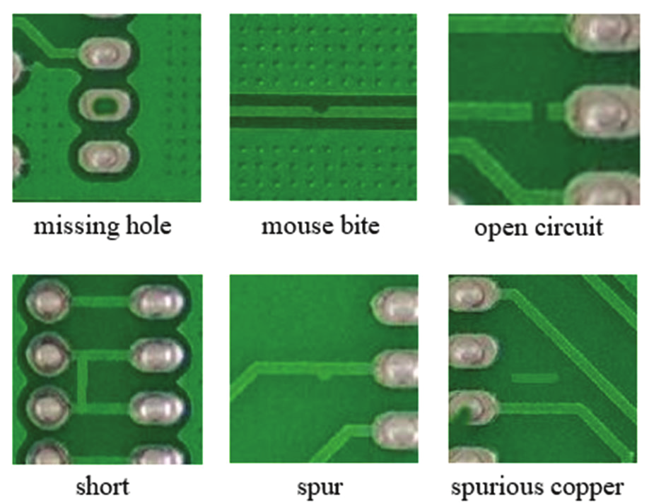
Six defect types: missing hole, mouse bite, open circuit, short, spur, spurious copper
Problem
Manual visual inspection of PCBs is slow and inconsistent, and it does not scale with production volume. Template-based automated inspection needs a stored reference per board design and breaks down when lighting or alignment changes. Both struggle with small, varied defects.
Method
Build an augmented training set covering six defect types.
Train a YOLOv8s detector on it.
Convert the trained model to TensorRT so it runs fast enough for real-time inspection.
Result
Model
mAP50
Inference
Size
YOLOv8s
98.6%
7.6 ms
87.5 MB
YOLOv8s + TensorRT
98.5%
6.7 ms
53.1 MB
TensorRT lost only 0.1% mAP50, cut inference time by about 0.9 ms, and shrank the model by about 39.3%.
Part of GripVT. Graduate research at NCUT, under my master's thesis.
A sub-pixel marker detection and tracking pipeline for a 9×11, 99-marker visuotactile sensor array.
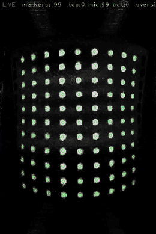
Live calibration view tracking all 99 markers
Problem
GripVT reads grip force from how the marker band deforms. The pipeline must find each of the 99 markers' position and size in every frame, precisely enough to catch a small muscle bulge at a light grip. The band is worn and removed between sessions, so lighting and marker position shift each time.
Method
Undistort and rotate each frame, then crop, denoise, flatten illumination, and binarize to isolate candidate marker blobs.
Fit a closed-form 2D Gaussian to each blob (Caruana log-parabola method) for a sub-pixel center and size, with no threshold to tune. Fall back to the blob centroid and area when a fit is invalid.
Lock each marker's identity and start position from a 15-frame median baseline.
Track every marker frame to frame with a Kalman filter and gated Hungarian assignment. The gate can reject a match, so a missing or stray detection does not corrupt a neighbor.
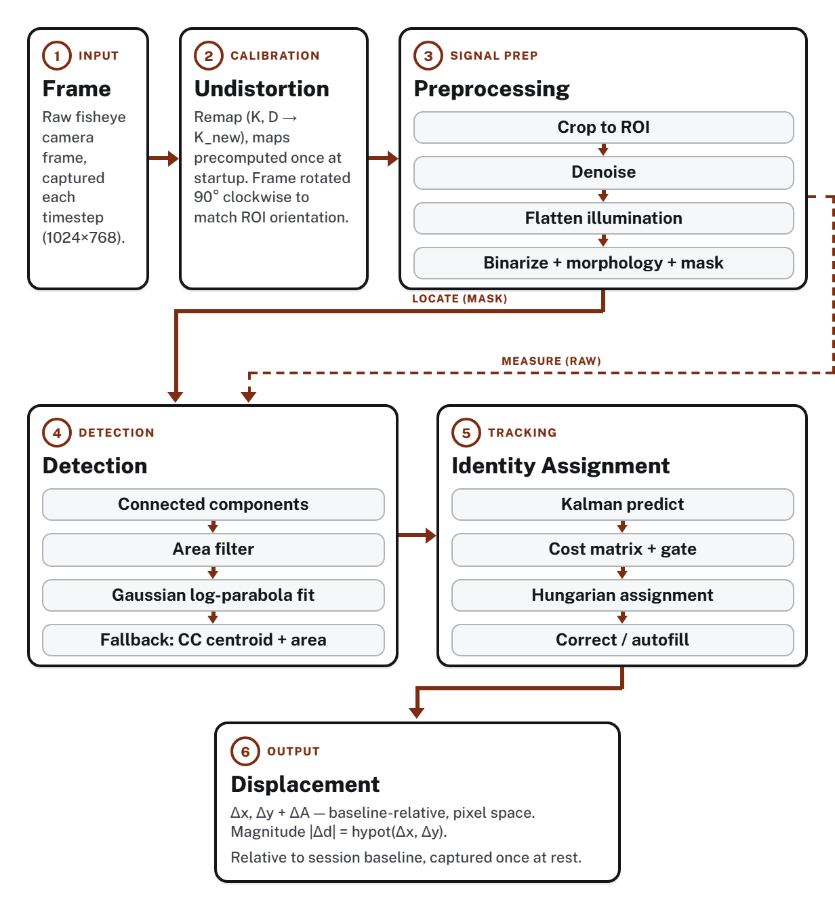
Pipeline stages
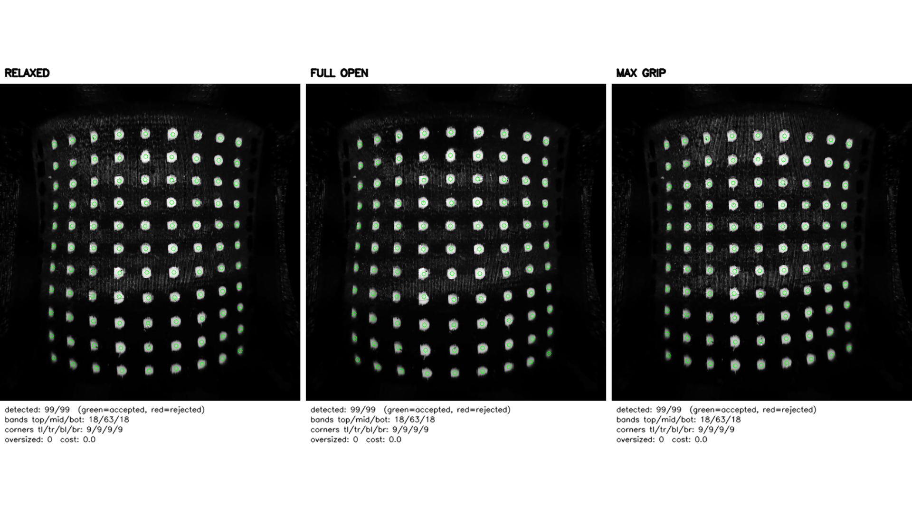
All 99 markers detected in relaxed, full open, and max grip states
Result
Throughput raised from 12.9 to 26.7 fps.
Sub-pixel position and threshold-free size for all 99 markers in every frame.
Used on real GripVT sessions, where detector self-calibration passed on the first attempt.
A light-emitting silicone lattice for visuotactile sensing. I designed the camera module that reads the skin and built the software that extracts its emission signals. The skin itself was designed by the co-author team, credited in the paper.
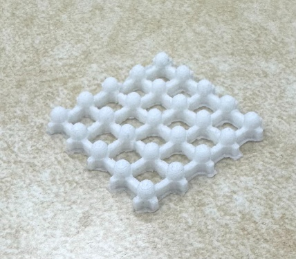
Fabricated lattice skin
Problem
Camera-based visuotactile sensors usually need dedicated lighting or careful optical calibration to read a soft skin's deformation. That adds parts and assembly steps, and it drifts over time from wear or misalignment.
Method
The team molds a 30 × 30 mm silicone lattice embedded with ZnS:Cu,Al phosphor. It emits light where it deforms, so it needs no external light.
A black-housing camera module holds the lattice on an acrylic window and records it.
Python and OpenCV extract intensity-time signals for two contact modes: normal pressing and shear sliding.
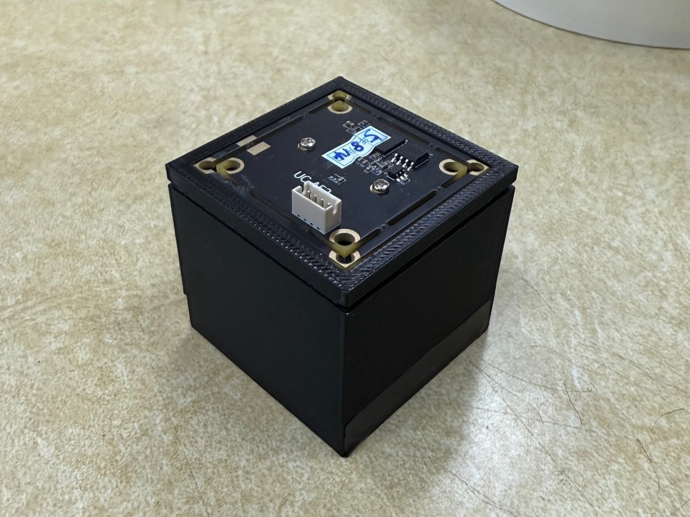
Black-housing camera fixture
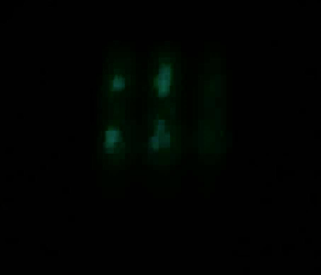
Pressing: localized emission spots
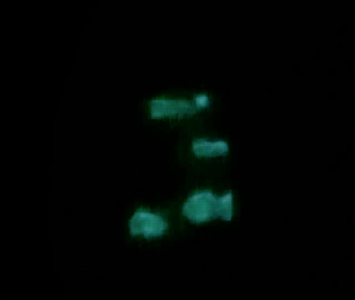
Shear sliding: elongated emission streak
Result
Pressing and shear gave visibly different emission shapes, confirmed by the extracted intensity-time signals.
The lattice told the two contact modes apart with no active lighting and no printed markers.
This is a preliminary, qualitative study. Contact forces were applied by hand and not measured.
TOOLS: Python, OpenCV, signal processing, image processing
A camera-and-conveyor prototype that detects and sorts defective packaging cartons in real time with a YOLO11n model.
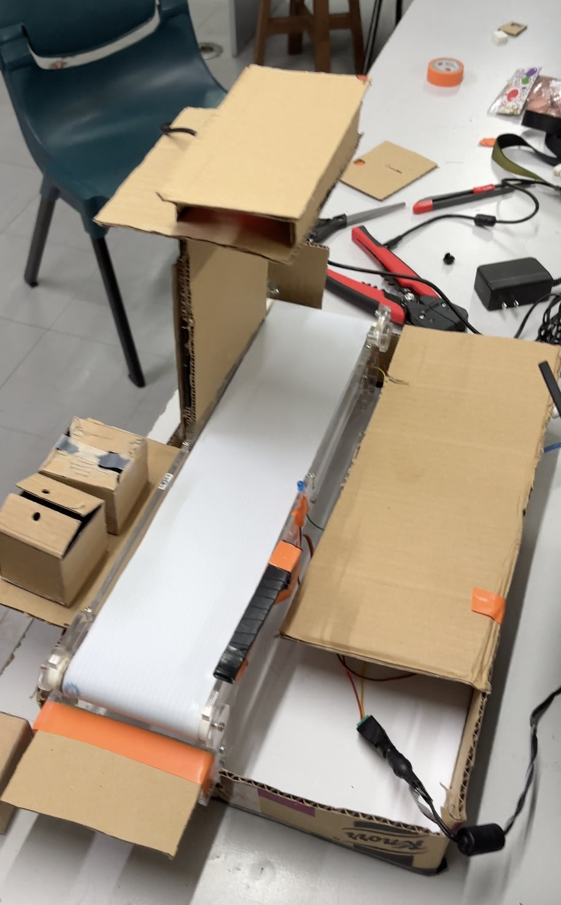
Cardboard-and-acrylic conveyor prototype with camera mount
Problem
Packaging lines need to catch defective cartons (open, torn, or holed) before they ship. Manual inspection does not scale on a fast line.
Method
Conveyor on a 12V DC motor, an ESP32-CAM for video, an Arduino Uno for control, and a servo and LED for sorting and signaling.
170 labeled images across four box conditions (sealed, open, torn, holed), split 70/20/10 and augmented to 510 images.
YOLO11n trained on that set. During live inference, a defect call inside the detection zone sends a serial command to the Arduino, which moves the servo and lights the LED.
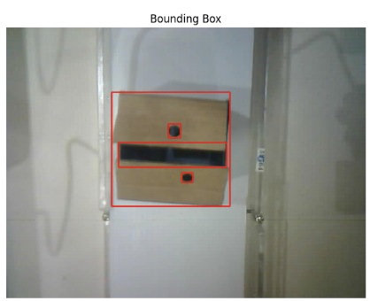
Live detection of a carton with a hole
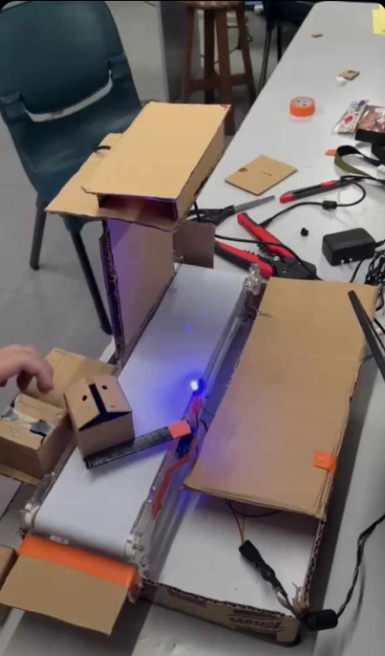
Blue LED lit after a defect call
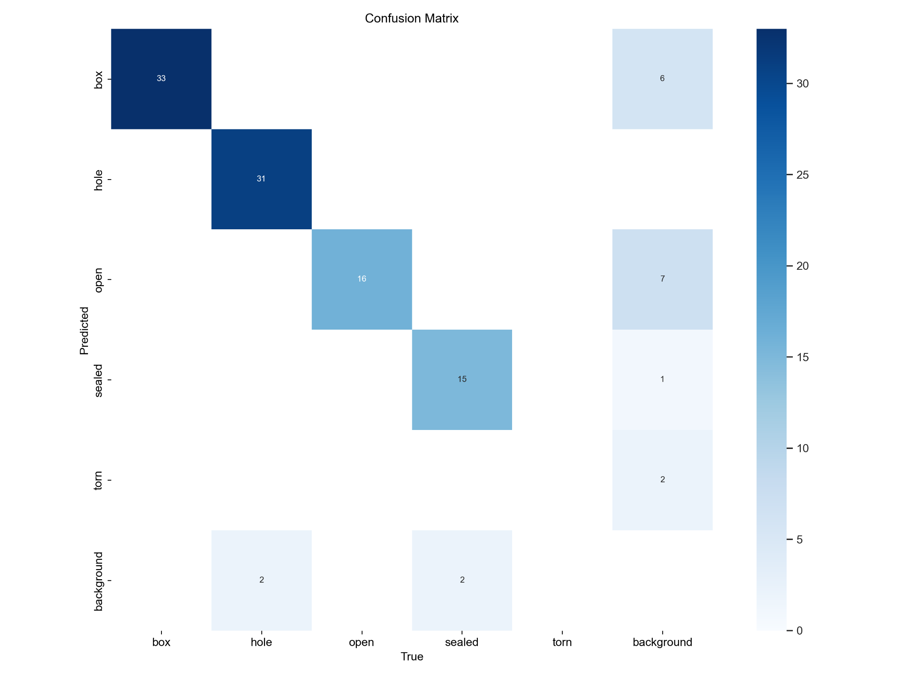
Confusion matrix
Result
0.872 precision, 0.948 recall, mAP50 of 0.970 (97.0%), and mAP50-95 of 0.796 across the four classes.
Defective boxes were caught and sorted correctly in testing, at about 6 seconds per box end to end. Most of that is a deliberate 5-second LED hold, not model speed.
Open boxes were the hardest class. The cardboard frame caused occasional servo stalling.